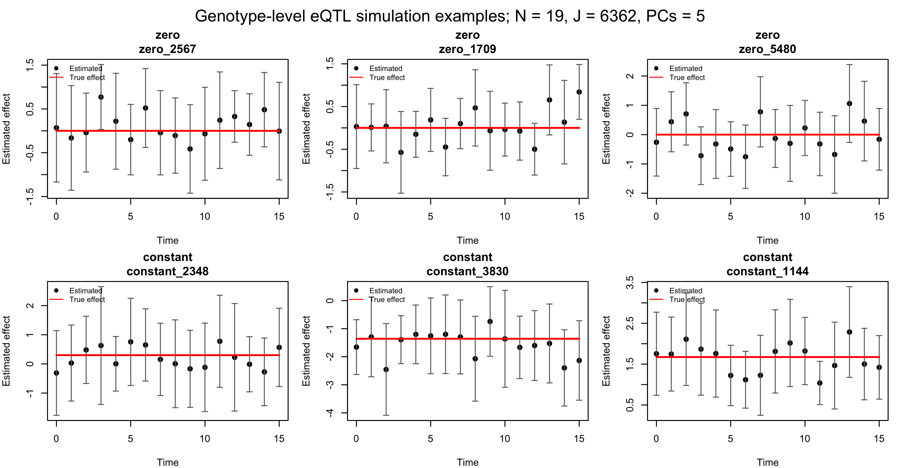
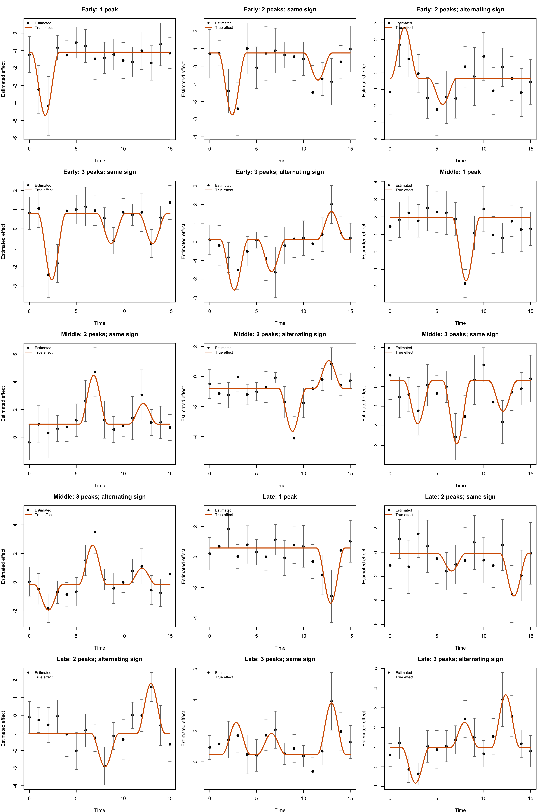
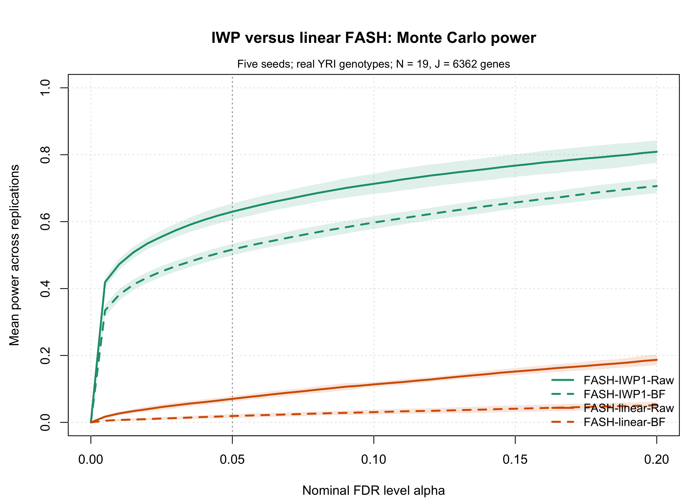
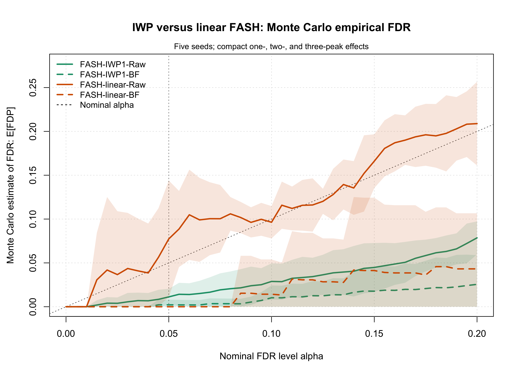
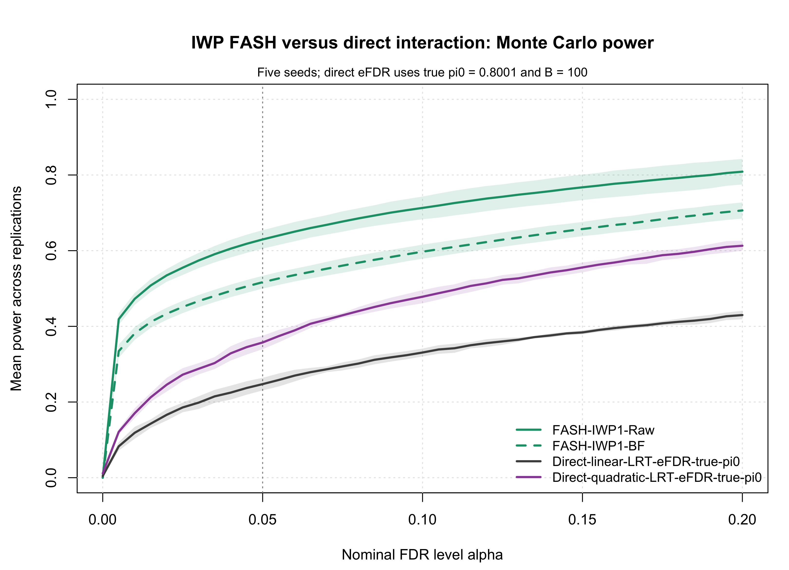
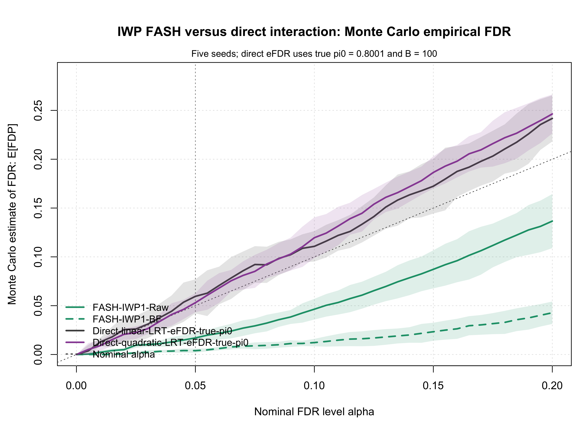
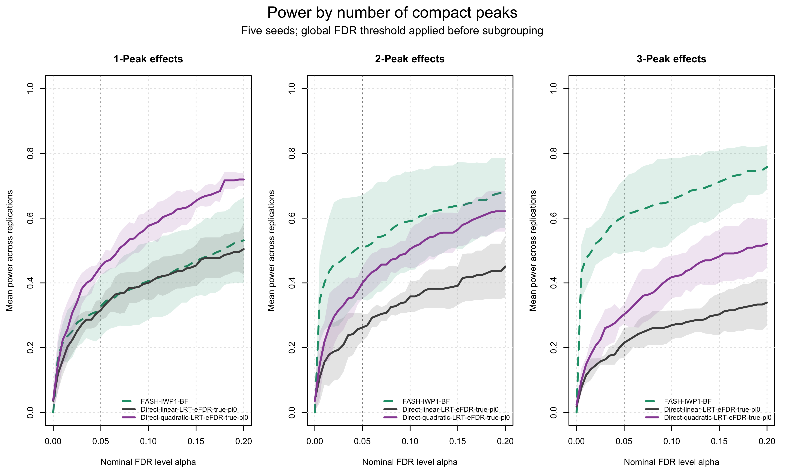

Last updated: 2026-08-26
Checks: 6 1
Knit directory: coderepo-local/
This reproducible R Markdown analysis was created with workflowr (version 1.7.2). The Checks tab describes the reproducibility checks that were applied when the results were created. The Past versions tab lists the development history.
The R Markdown file has unstaged changes. To know which version of
the R Markdown file created these results, you’ll want to first commit
it to the Git repo. If you’re still working on the analysis, you can
ignore this warning. When you’re finished, you can run
wflow_publish to commit the R Markdown file and build the
HTML.
Great job! The global environment was empty. Objects defined in the global environment can affect the analysis in your R Markdown file in unknown ways. For reproduciblity it’s best to always run the code in an empty environment.
The command set.seed(20251109) was run prior to running
the code in the R Markdown file. Setting a seed ensures that any results
that rely on randomness, e.g. subsampling or permutations, are
reproducible.
Great job! Recording the operating system, R version, and package versions is critical for reproducibility.
Nice! There were no cached chunks for this analysis, so you can be confident that you successfully produced the results during this run.
Great job! Using relative paths to the files within your workflowr project makes it easier to run your code on other machines.
Great! You are using Git for version control. Tracking code development and connecting the code version to the results is critical for reproducibility.
The results in this page were generated with repository version e77a71e. See the Past versions tab to see a history of the changes made to the R Markdown and HTML files.
Note that you need to be careful to ensure that all relevant files for
the analysis have been committed to Git prior to generating the results
(you can use wflow_publish or
wflow_git_commit). workflowr only checks the R Markdown
file, but you know if there are other scripts or data files that it
depends on. Below is the status of the Git repository when the results
were generated:
Ignored files:
Ignored: .DS_Store
Ignored: .Rhistory
Ignored: .Rproj.user/
Ignored: Rplots.pdf
Ignored: analysis/.DS_Store
Ignored: analysis/.Rhistory
Ignored: code/.DS_Store
Ignored: code/.Rhistory
Ignored: code/revision_simulations/.DS_Store
Ignored: data/appendixB/
Ignored: data/dynamic_eQTL_real/
Ignored: data/revision_simulations/
Ignored: data/toy_example/
Ignored: output/dynamic_eQTL_real/
Ignored: output/pdf/
Ignored: output/playwright/
Ignored: output/revision_simulations/
Ignored: scripts/
Untracked files:
Untracked: analysis/revision_internal_fash_knockoff.rmd
Untracked: analysis/revision_internal_fash_temporal_class_enhancer_enrichment.rmd
Untracked: analysis/revision_internal_three_likelihood_comparison.rmd
Untracked: code/03_nonlindyn_lfsr.R
Untracked: code/03_nonlindyn_lfsr.sbatch
Untracked: code/revision_simulations/internal/fash_knockoff/reporting.R
Untracked: code/revision_simulations/internal/fash_knockoff/test_reporting.R
Untracked: code/revision_simulations/internal/fash_temporal_class_enhancer_enrichment/
Untracked: code/revision_simulations/internal/per_unit_expression_correlation/
Untracked: code/revision_simulations/r1_r2_fashr0143/source_snapshots/
Untracked: code/revision_simulations/r3_functional_testing/test_reporting.R
Untracked: code/revision_simulations/r3_r4_fashr0143/21_r3_center_aligned_relative_location_paired_core.R
Untracked: code/revision_simulations/r3_r4_fashr0143/21_r3_center_aligned_relative_location_paired_fashr0143.R
Untracked: code/revision_simulations/r3_r4_fashr0143/21_r3_center_aligned_relative_location_paired_fashr0143.sbatch
Untracked: code/revision_simulations/r3_r4_fashr0143/source_snapshots/r3_center_aligned_relative_location_paired_driver.R
Untracked: code/revision_simulations/r3_r4_fashr0143/source_snapshots/r3_center_aligned_relative_location_paired_simulation_functions.R
Untracked: code/revision_simulations/r3_r4_fashr0143/test_r3_center_aligned_relative_location_paired.R
Untracked: code/revision_simulations/r4_correlated_errors/compute_full_model_residual_correlation.R
Untracked: code/revision_simulations/r4_correlated_errors/compute_pc_residual_expression_correlation.R
Unstaged changes:
Modified: analysis/dynamic_eQTL_real.rmd
Modified: analysis/dynamic_eQTL_real_cl.rmd
Modified: analysis/dynamic_eQTL_real_full.rmd
Modified: analysis/nonlinear_dynamic_eQTL_real.Rmd
Modified: analysis/nonlinear_dynamic_eQTL_real_cl.Rmd
Modified: analysis/nonlinear_dynamic_eQTL_real_full.rmd
Modified: analysis/revision_combined_spiky_genotype_simulation.rmd
Modified: analysis/revision_correlated_error_simulation.rmd
Modified: analysis/revision_functional_testing_simulation.rmd
Modified: analysis/revision_genotype_level_simulation.rmd
Deleted: code/02_dyn.R
Modified: code/02_dyn_lfsr.R
Modified: code/02_dyn_lfsr.sbatch
Deleted: code/03_nonlindyn.R
Modified: code/revision_simulations/README.md
Modified: code/revision_simulations/internal/fash_knockoff/plot_lfdr_histograms.R
Modified: code/revision_simulations/internal/fash_knockoff/plot_w_boxplot_by_discovery.R
Modified: code/revision_simulations/r1_r2_fashr0143/reporting_overlay.R
Modified: code/revision_simulations/r3_functional_testing/reporting.R
Modified: code/revision_simulations/r4_correlated_errors/reporting.R
Modified: code/revision_simulations/r4_correlated_errors/test_unit_specific_residual_permutation_helpers.R
Modified: code/revision_simulations/r4_correlated_errors/unit_specific_residual_permutation_helpers.R
Modified: code/revision_simulations/shared/simulation_functions.R
Note that any generated files, e.g. HTML, png, CSS, etc., are not included in this status report because it is ok for generated content to have uncommitted changes.
These are the previous versions of the repository in which changes were
made to the R Markdown
(analysis/revision_combined_spiky_genotype_simulation.rmd)
and HTML
(docs/revision_combined_spiky_genotype_simulation.html)
files. If you’ve configured a remote Git repository (see
?wflow_git_remote), click on the hyperlinks in the table
below to view the files as they were in that past version.
| File | Version | Author | Date | Message |
|---|---|---|---|---|
| Rmd | 09f63bc | Ziang Zhang | 2026-08-24 | Sync revision analyses and rendered pages |
| html | 09f63bc | Ziang Zhang | 2026-08-24 | Sync revision analyses and rendered pages |
| Rmd | c87957a | Ziang Zhang | 2026-08-10 | Add revision analyses: R1-R6 reviewer-facing pages and internal studies |
| html | c87957a | Ziang Zhang | 2026-08-10 | Add revision analyses: R1-R6 reviewer-facing pages and internal studies |
This real-genotype simulation evaluates dynamic-eQTL detection when the true effects are continuous but sharply localized and are not generated from the IWP prior used by FASH. It uses the same individual-level pipeline as the broad random B-spline simulation.
The FASH-IWP1 and FASH-linear rows were recomputed on the same five
fixed simulation seeds with fashr 0.1.43 at RemoteSha
bf223df75da6e41ae48607a56b4cd12d7c3b24e7. The targeted
result family completed at 2026-08-22 06:47:48 UTC. The
direct-interaction permutation tests were not rerun: their rows come
from the unchanged formal historical cache. Before combining the rows,
the report verifies every retained SHA-256 digest and requires exact
selected-pair/genotype agreement plus numerical agreement of the
simulated inputs to 1e-12.
knitr::kable(
result_provenance_table,
align = "l",
caption = paste(
"Table R2.1: Computation source and validation status for each result",
"component in the refreshed page."
)
)| Result component | Retained source | Software provenance | Status |
|---|---|---|---|
| FASH-IWP1 and FASH-linear, Raw and BF | Targeted R1/R2 0.1.43 cache | fashr 0.1.43 @ bf223df75da6 | Recomputed on Midway3 |
| Direct linear and quadratic interaction eFDR | Historical R2 formal cache | Historical direct LRT/eFDR cache; unchanged | Reused; not rerun |
| Representative seed-12345 simulation | Historical R2 formal cache | Numerically paired to the retained 0.1.43 payload | Strict pairing check passed |
For donor \(i\), variant \(j\), and time \(t\),
\[ Y_{ijt} = \alpha_{jt} + G_{ij}\beta_j(t) + X_i^T\gamma_{jt} + \epsilon_{ijt}, \qquad \epsilon_{ijt} \sim N(0,1). \]
The genotype matrix is taken from the real YRI data used in the
manuscript. For each simulation seed, one tested cis variant is sampled
uniformly from each of the 6,362 tested genes, and its
observed dosage vector is retained for the same 19 donors.
The resulting design has one locus-level unit per gene and an empirical
MAF distribution; a variant tested for multiple genes may therefore
appear more than once. R1, R2, R3A, and R3B use the exact same sampled
gene-variant pairs and genotype matrix for a given seed.
The five columns of \(X\) remain simulated independently from \(N(0,1)\) and are standardized across donors. Independently for each covariate, gene, and time, \(\gamma_{kjt}\sim N(0,0.5^2)\). The current simulation sets \(\alpha_{jt}=0\); each fitted regression still includes an intercept. Effect trajectories, covariates, covariate effects, and expression noise remain simulated.
seed <- 12345
component_seeds <- revision_component_seeds(seed)
genotype_cache <- readRDS(
"output/revision_simulations/shared/real_genotype_one_per_gene_J6362_pilot5/genotype_samples.rds"
)
genotype_sample <- genotype_cache$samples[[as.character(seed)]]
G <- genotype_sample$G
covariates <- simulate_covariate_matrix(
n_donors = 19,
n_covariates = 5,
seed = component_seeds[["covariates"]]
)knitr::kable(
genotype_provenance_table,
align = "l",
caption = "Table R2.2: Provenance and selection rule for the real-genotype simulation design."
)| Artifact | File | Size (bytes) | MD5 |
|---|---|---|---|
| YRI genotype VCF | YRI_genotype.vcf.gz | 118,088,371 | 4f9eb383ce3512d867b42ab806d451a8 |
| Paper gene-variant summary | eqtl_summary.rds | 93,591,244 | 23e7f6a0093309059424207872dfa1e0 |
| Shared genotype cache | genotype_samples.rds | 2,788,231 | 37a620ab8a99aeb16d2b977d0bbc2099 |
knitr::kable(
genotype_sampling_table,
align = "l",
caption = paste(
"Table R2.3: Per-seed genotype sampling summary. Repeated assignments",
"refer to the same tested variant selected for more than one gene."
)
)| Seed | Genes | Unique rsIDs | Repeated cross-gene assignments | MAF range | Median MAF |
|---|---|---|---|---|---|
| 12345 | 6,362 | 6,345 | 17 | 0.101-0.500 | 0.254 |
| 22345 | 6,362 | 6,342 | 20 | 0.100-0.500 | 0.243 |
| 32345 | 6,362 | 6,338 | 24 | 0.100-0.500 | 0.251 |
| 42345 | 6,362 | 6,333 | 29 | 0.100-0.500 | 0.239 |
| 52345 | 6,362 | 6,338 | 24 | 0.100-0.500 | 0.257 |
Each replicate has 19 donors, 16 time
points, 6,362 gene-level units, and five PC-like
covariates. There are 1,272 dynamic eQTLs, 2,545 constant eQTLs with
effects drawn from \(N(0,1)\), and
2,545 zero-effect units. Therefore, the true dynamic-null proportion is
\(\pi_0=5090/6362=\) 0.8001.
For a dynamic eQTL,
\[ \beta_j(t) = \mu_j + h_j(t), \qquad \mu_j \sim N(0,1), \]
where \(h_j(t)\) is a sum of one, two, or three compact raised-cosine peaks,
\[ h(t;c,w)= \frac{1+\cos\{\pi(t-c)/w\}}{2} \mathbf{1}(|t-c|\leq w), \qquad w=1.5. \]
The largest peak is placed at a random location in an early, middle,
or late window. Additional peaks, when present, occur in different
windows and have random amplitudes between 35% and
75% of the primary peak. Multi-peak curves include both
same-sign and alternating-sign patterns. The deviation \(h_j\) is not mean-centered; it is scaled to
centered RMS 0.9, and the independent genetic main effect
\(\mu_j\) remains as the background
effect outside the compact supports. Here Early, Middle, and Late are
descriptive labels for the primary peak’s simulation window; unlike R3,
they are not functional hypotheses evaluated from the complete effect
curve.
class_probs <- c(
dynamic_bspline = 0.20,
constant = 0.40,
zero = 0.40
)
shape_cell_probs <- c(
k1__spiky__single = 1 / 3,
`k2__spiky__same-sign` = 1 / 6,
`k2__spiky__alternating-sign` = 1 / 6,
`k3__spiky__same-sign` = 1 / 6,
`k3__spiky__alternating-sign` = 1 / 6
)
evaluation_grid <- seq(0, 15, by = 0.1)
effect_sim <- simulate_raised_cosine_multipeak_effect_set(
n_variants = 6362,
time_grid = 0:15,
evaluation_grid = evaluation_grid,
class_probs = class_probs,
width_levels = c(spiky = 1.5),
spike_counts = 1:3,
shape_cell_probs = shape_cell_probs,
primary_time_groups = c("early", "middle", "late"),
relative_amplitude_range = c(0.35, 0.75),
center_by_observed_mean = FALSE,
validate_functional_labels = FALSE,
switch_threshold = 0.25,
target_centered_rms = 0.9,
baseline_sd = 1,
constant_sd = 1,
dynamic_baseline_sd = 1,
exact_class_counts = TRUE,
seed = seed,
class_seed = component_seeds[["classes"]],
constant_seed = component_seeds[["constant_effects"]],
shape_seed = component_seeds[["functional_truth"]],
scenario = "r2_real_genotype_one_per_gene_timed_cosine_one_two_three_peak_main_effect_dynamic_eqtl"
)
effect_sim <- reassign_effect_simulation_by_maf(
effect_sim = effect_sim,
maf = genotype_sample$variant_info$observed_maf,
class_probs = class_probs,
seed = component_seeds[["classes"]],
n_strata = 10
)
expression_sim <- simulate_eqtl_expression_from_genotypes(
G = G,
beta_matrix = effect_sim$beta_matrix,
time_grid = 0:15,
covariates = covariates,
expression_noise_sd = 1,
covariate_effect_sd = 0.5,
intercept_sd = 0,
seed = component_seeds[["expression"]]
)The 1,272 dynamic units are exactly balanced at 424 per
one-, two-, and three-peak group. Alternating peak signs describe
geometry only; this page tests global dynamic eQTL status and does not
equate an alternating pattern with the manuscript’s switch functional.
Functional testing is evaluated separately.
knitr::kable(
allocation_table,
align = "l",
caption = paste(
"Table R2.4: Allocation of dynamic eQTLs across peak counts, sign",
"patterns, and primary timing windows in the spiky simulation."
)
)| Shape | Early | Middle | Late | Total | |
|---|---|---|---|---|---|
| k1__spiky__single | 1 peak | 142 | 141 | 141 | 424 |
| k2__spiky__alternating-sign | 2 peaks; alternating sign | 71 | 71 | 70 | 212 |
| k2__spiky__same-sign | 2 peaks; same sign | 71 | 71 | 70 | 212 |
| k3__spiky__alternating-sign | 3 peaks; alternating sign | 71 | 71 | 70 | 212 |
| k3__spiky__same-sign | 3 peaks; same sign | 71 | 71 | 70 | 212 |
At each time, effects and standard errors are estimated with
Y ~ G + PC1 + PC2 + PC3 + PC4 + PC5. The t-statistic
correction uses df = 19 - 7 = 12. FASH receives only these
per-time estimates and corrected standard errors. The direct interaction
tests use the full individual-level data.
eqtl_summary <- estimate_eqtl_summaries_from_genotypes(
G = G,
expression = expression_sim$expression,
covariates = covariates,
apply_t_se_correction = TRUE
)
datasets <- make_fash_datasets_from_eqtl_summary(
beta_hat = eqtl_summary$beta_hat,
se = eqtl_summary$se,
true_beta = effect_sim$beta_matrix,
time_grid = 0:15,
unit_info = effect_sim$unit_info,
scenario = "r2_real_genotype_one_per_gene_timed_cosine_one_two_three_peak_main_effect_dynamic_eqtl"
)
common_sd_grid <- default_revision_grid()
common_pred_step <- 1
common_penalty <- 10
fash_iwp1_raw <- fashr::fash(
Y = "y",
smooth_var = "x",
S = "sd",
data_list = datasets,
order = 1,
grid = common_sd_grid,
num_basis = 20,
pred_step = common_pred_step,
penalty = common_penalty,
num_cores = 4,
verbose = FALSE
)
fash_iwp1_bf <- fashr::BF_update(fash_iwp1_raw, plot = FALSE)
fash_linear_raw <- fit_linear_mixture_fash(
datasets = datasets,
grid = common_sd_grid,
pred_step = common_pred_step,
penalty = common_penalty
)
fash_linear_bf <- BF_update_linear_mixture_fash(fash_linear_raw)All tables and curves below average five independently simulated
datasets with seeds 12345, 22345,
32345, 42345, and 52345. The
seed-12345 full fit is used only for representative trajectories.
Truth labels are reassigned within empirical-MAF deciles so that dynamic, constant, and zero-effect units have closely matched MAF distributions.
knitr::kable(
truth_maf_balance_table,
align = "l",
caption = "Table R2.5: Empirical MAF balance across truth classes for each simulation seed."
)| Truth class | Units per seed | Mean MAF across seeds | Maximum absolute MAF SMD |
|---|---|---|---|
| Dynamic | 1,272 | 0.270 | 0.0010 |
| Constant | 2,545 | 0.270 | 0.0034 |
| Zero | 2,545 | 0.270 | 0.0031 |
The first figure shows zero-effect and constant dynamic-null examples. Points are per-time effect estimates, bars show two corrected standard errors, and the colored line is the true effect.
plot_genotype_eqtl_examples(
out,
classes = c("zero", "constant"),
n_per_class = 3,
seed = 1,
true_curve_n = 500
)
Figure R2.1: Representative zero-effect and constant-effect dynamic-null eQTLs from seed 12345. Points are estimated genetic effects, vertical bars span two corrected standard errors, and colored curves are the true effects.
The second figure shows one representative from each available shape-by-primary-window cell. Truth curves are drawn on a dense time grid so that compact peaks between the 16 observed time points remain visible.
plot_cosine_peak_cell_examples(
out,
seed = 1,
include_time_groups = TRUE
)
Figure R2.2: Representative compact dynamic eQTLs across peak-count, sign-pattern, and primary-window cells. Points and error bars show the 16 estimated effects and two corrected standard errors; colored dense curves show the continuous truths.
This comparison aligns the exact null, scale grid,
pred_step, and null-favoring penalty.
FASH-IWP1 uses the first-order IWP alternative. For
FASH-linear, let \(h=1\)
and \(z(t)=\{t-\min(t)\}/h\). Its prior
is
\[ \beta_j(t)=a_j+\theta_j z(t), \qquad \theta_j\sim\pi_0\delta_0+ \sum_{k=1}^{K}\pi_k N(0,\tau_k^2). \]
The zero-grid component is the same unrestricted constant null used
by IWP1. For each positive component, \(\tau_k\) is the prior SD of the linear
departure at \(\min(t)+h\). The
complete grid is one exact zero plus 51 positive values from \(\exp(-5)\) to 1; all weights
are estimated jointly with penalty = 10. IWP1 uses the same
numerical grid for its one-step predictive SD. This matches the one-step
marginal scale while leaving the linear and IWP covariance shapes
different.
In fashr 0.1.43, fashr::BF_update() does
not re-fit the alternative mixture. It retains the conditional weights
across positive-grid components from the original penalized fit, uses
that fixed conditional alternative to form the Bayes factors, and
updates only the total null-versus-alternative weight. The table below
therefore summarizes the retained conditional alternative geometry
together with the updated total null weight across the five seeds. The
exact implementation is recorded in the fashr
0.1.43 source.
knitr::kable(
pi0_table,
align = "l",
caption = paste(
"Table R2.6: Estimated dynamic-null proportions and linear-mixture prior",
"diagnostics across five spiky-effect simulation replicates."
)
)| Method | Fit | Mean estimated pi0 (95% MC CI) | Active non-null components: mean [range] | Alternative RMS pred-step SD: mean [range] |
|---|---|---|---|---|
| FASH-IWP1 | Raw | 0.717 [0.676, 0.759] | — | — |
| FASH-IWP1 | BF-corrected | 0.898 [0.895, 0.901] | — | — |
| FASH-linear | Raw | 0.761 [0.721, 0.801] | 1.8 [1, 3] | 0.039 [0.035, 0.041] |
| FASH-linear | BF-corrected | 0.967 [0.963, 0.970] | 1.8 [1, 3] | 0.039 [0.035, 0.041] |
knitr::kable(
fash_table,
align = "l",
caption = paste(
"Table R2.7: Monte Carlo power and empirical FDR at alpha 0.05 for IWP",
"and linear FASH under compact spiky effects."
)
)| Method | Mean discoveries | Power (95% MC CI) | Empirical FDR: E[FDP] (95% MC CI) |
|---|---|---|---|
| FASH-IWP1-Raw | 814.8 | 0.630 [0.605, 0.654] | 0.017 [0.012, 0.022] |
| FASH-IWP1-BF | 659.8 | 0.517 [0.500, 0.534] | 0.004 [0.002, 0.006] |
| FASH-linear-Raw | 97.4 | 0.070 [0.062, 0.078] | 0.081 [0.055, 0.107] |
| FASH-linear-BF | 24.4 | 0.019 [0.013, 0.025] | 0.009 [0.000, 0.033] |
plot_mc_alpha_curves(
fash_alpha,
metric = "power",
title = "IWP versus linear FASH: Monte Carlo power",
subtitle = "Five seeds; real YRI genotypes; N = 19, J = 6362 genes",
style_profile = "combined"
)
Figure R2.3: Monte Carlo power across nominal alpha for IWP and linear FASH under compact one-, two-, and three-peak effects. Curves identify raw and BF-updated methods in the in-figure legend; uncertainty summarizes five seeds.
plot_mc_alpha_curves(
fash_alpha,
metric = "fdr",
title = "IWP versus linear FASH: Monte Carlo empirical FDR",
subtitle = "Five seeds; real YRI genotypes; N = 19, J = 6362 genes",
legend_position = "topleft",
style_profile = "combined"
)
Figure R2.4: Monte Carlo empirical FDR across nominal alpha for IWP and linear FASH under compact spiky effects. Curves identify methods in the in-figure legend, and the diagonal reference marks nominal calibration.
At \(\alpha=0.05\), IWP-BF has mean power 0.517, compared with 0.019 for linear-BF. Their empirical FDR estimates are 0.004 and 0.009.
The direct linear LRT tests a linear genotype-by-time interaction.
The direct quadratic LRT jointly tests linear and quadratic interaction
terms. Their permutation eFDR calculations use B=100
donor-level permutations and are supplied with the true \(\pi_0=5090/6362\), deliberately removing
null-proportion estimation uncertainty from the direct baselines.
Only the IWP FASH rows in this section were recomputed with
fashr 0.1.43. The direct linear and quadratic rows are read
unchanged from the historical formal cache after the report confirms
that its simulated genotype, covariates, truth, and expression agree
with the retained 0.1.43 payload.
out <- add_direct_interaction_efdr_results_to_genotype_output(
out = out,
n_permutations = 100,
alpha = 0.05,
seed = component_seeds[["permutations"]],
lambda = 0.5,
pi0_method = "conservative",
true_pi0 = 5090 / 6362,
include_true_pi0 = TRUE,
permute_covariates_with_expression = TRUE,
num_cores = 4,
overwrite = TRUE,
verbose = FALSE
)knitr::kable(
direct_table,
align = "l",
caption = paste(
"Table R2.8: Monte Carlo power and empirical FDR at alpha 0.05 for IWP",
"FASH and direct interaction tests under compact spiky effects."
)
)| Method | Mean discoveries | Power (95% MC CI) | Empirical FDR: E[FDP] (95% MC CI) |
|---|---|---|---|
| FASH-IWP1-Raw | 814.8 | 0.630 [0.605, 0.654] | 0.017 [0.012, 0.022] |
| FASH-IWP1-BF | 659.8 | 0.517 [0.500, 0.534] | 0.004 [0.002, 0.006] |
| Direct-linear-LRT-eFDR-true-pi0 | 334.6 | 0.247 [0.231, 0.264] | 0.060 [0.042, 0.077] |
| Direct-quadratic-LRT-eFDR-true-pi0 | 480.2 | 0.357 [0.340, 0.375] | 0.053 [0.043, 0.063] |
plot_mc_alpha_curves(
direct_alpha,
metric = "power",
title = "IWP FASH versus direct interaction: Monte Carlo power",
subtitle = "Five seeds; direct eFDR uses true pi0 = 0.8001 and B = 100",
style_profile = "combined"
)
Figure R2.5: Monte Carlo power across nominal alpha for IWP FASH and direct linear or quadratic interaction tests under compact spiky effects. The in-figure legend identifies methods; direct-test eFDR uses the true pi0 and 100 permutations.
plot_mc_alpha_curves(
direct_alpha,
metric = "fdr",
title = "IWP FASH versus direct interaction: Monte Carlo empirical FDR",
subtitle = "Five seeds; direct eFDR uses true pi0 = 0.8001 and B = 100",
legend_position = "bottomleft",
style_profile = "combined"
)
Figure R2.6: Monte Carlo empirical FDR across nominal alpha for IWP FASH and direct interaction tests under compact spiky effects. The in-figure legend identifies methods, and the diagonal reference marks nominal calibration.
At \(\alpha=0.05\), mean power is 0.517 for IWP-BF, 0.247 for direct linear, and 0.357 for direct quadratic. The corresponding empirical FDR estimates are 0.004, 0.060, and 0.053.
The global discovery threshold is fitted once across all
6,362 gene-level units. Power is then summarized within the
true one-, two-, and three-peak dynamic subgroups; no subgroup-specific
threshold is estimated.
knitr::kable(
peak_table,
align = "l",
caption = paste(
"Table R2.9: Monte Carlo power at alpha 0.05 stratified by the true",
"number of compact peaks; all calls use the same global threshold."
)
)| Peaks | Method | Dynamic eQTLs per replicate | Power (95% MC CI) |
|---|---|---|---|
| 1 | FASH-IWP1-BF | 424 | 0.365 [0.359, 0.370] |
| 1 | Direct-linear-LRT-eFDR-true-pi0 | 424 | 0.309 [0.284, 0.334] |
| 1 | Direct-quadratic-LRT-eFDR-true-pi0 | 424 | 0.405 [0.388, 0.422] |
| 2 | FASH-IWP1-BF | 424 | 0.568 [0.540, 0.597] |
| 2 | Direct-linear-LRT-eFDR-true-pi0 | 424 | 0.265 [0.236, 0.293] |
| 2 | Direct-quadratic-LRT-eFDR-true-pi0 | 424 | 0.394 [0.360, 0.428] |
| 3 | FASH-IWP1-BF | 424 | 0.617 [0.589, 0.645] |
| 3 | Direct-linear-LRT-eFDR-true-pi0 | 424 | 0.168 [0.163, 0.173] |
| 3 | Direct-quadratic-LRT-eFDR-true-pi0 | 424 | 0.273 [0.238, 0.308] |
plot_mc_shape_power_grid(
peak_alpha[peak_alpha$method %in% peak_methods, ],
shape_order = c("1-peak", "2-peak", "3-peak"),
title = "Power by number of compact peaks",
subtitle = "Five seeds; global FDR threshold applied before subgrouping",
style_profile = "combined",
width = 2600
)
Figure R2.7: Monte Carlo discovery power across nominal alpha, stratified by one-, two-, and three-peak truth. Panels denote peak count, curves identify methods in the in-figure legend, and the FDR threshold is fitted globally before subgrouping.
The regenerated tables and curves provide the paired comparison of IWP and linear covariance shapes after matching their exact null, one-step SD grid, and null-favoring penalty. The peak-stratified analysis reports how each method behaves as the trajectory contains one, two, or three localized features. The direct methods are given the true null proportion, whereas FASH estimates its mixture weights from the summary statistics. R1 and R2 are exactly paired on their sampled gene-variant units and real genotype matrices for every seed; only their simulated effect geometries differ.
The R2 simulation driver uses the shared simulation functions. Real-genotype selection, dosage extraction, validation, and MAF-balanced truth assignment are implemented in the shared real-genotype helper, and the versioned input cache is created by the shared cache builder. The page-specific cache validation and formatting are in R2 reporting code. The shared 0.1.43 reporting overlay validates the completed targeted cache and combines its FASH rows with only the direct rows from the historical cache. The overlay also validates the immutable simulation-source snapshot used by the displayed 0.1.43 result. In a clean Midway3 workspace, that targeted result family is generated with:
sbatch slurm/11_r1_r2_fashr0143.sbatchThe following older command regenerates the full historical-style five-seed cache, including the direct tests. It is retained as historical provenance but is not the command that produced the displayed 0.1.43 FASH rows.
The historical full five-seed cache can be regenerated with:
Rscript --vanilla \
code/revision_simulations/shared/build_real_genotype_one_per_gene_cache.R
Rscript --vanilla \
code/revision_simulations/r2_spiky_transient/run_spiky_transient_mc_replication.R \
--J 6362 \
--n-donors 19 \
--n-covariates 5 \
--noise-sd 1 \
--dynamic-main-effect-sd 1 \
--width-half 1.5 \
--target-centered-rms 0.9 \
--efdr-permutations 100 \
--seed-list 12345,22345,32345,42345,52345 \
--genotype-cache output/revision_simulations/shared/real_genotype_one_per_gene_J6362_pilot5/genotype_samples.rds \
--output-id r2_real_genotype_one_per_gene_J6362_timed_cosine_one_two_three_peak_main_effect_linear_mixture_predstep1_penalty10_pilot5 \
--num-cores 4After the formal R1-R3 caches have been generated, exact pairing of every sampled gene-variant unit and genotype matrix is validated with:
Rscript --vanilla \
code/revision_simulations/shared/validate_r1_r2_real_genotype_pairing.R \
--r1-output-id r1_real_genotype_one_per_gene_J6362_random_bspline_main_effect_linear_mixture_predstep1_penalty10_pilot5 \
--r2-output-id r2_real_genotype_one_per_gene_J6362_timed_cosine_one_two_three_peak_main_effect_linear_mixture_predstep1_penalty10_pilot5 \
--r3-output-id r3_real_genotype_one_per_gene_J6362_matched_functional_relative_clearance_main_effect_pilot5The report requires a successful
summary/real_genotype_pairing_validation.csv artifact and
will stop if the R1/R2/R3 genotype designs are not exactly paired.
The recomputed FASH result family is stored under:
output/revision_simulations/mc/r1_r2_fashr0143/The unchanged historical full fit and direct-interaction results are stored under:
output/revision_simulations/mc/r2_real_genotype_one_per_gene_J6362_timed_cosine_one_two_three_peak_main_effect_linear_mixture_predstep1_penalty10_pilot5/
sessionInfo()R version 4.5.1 (2025-06-13)
Platform: aarch64-apple-darwin20
Running under: macOS Sequoia 15.6.1
Matrix products: default
BLAS: /System/Library/Frameworks/Accelerate.framework/Versions/A/Frameworks/vecLib.framework/Versions/A/libBLAS.dylib
LAPACK: /Library/Frameworks/R.framework/Versions/4.5-arm64/Resources/lib/libRlapack.dylib; LAPACK version 3.12.1
locale:
[1] C.UTF-8/C.UTF-8/C.UTF-8/C/C.UTF-8/C.UTF-8
time zone: America/Chicago
tzcode source: internal
attached base packages:
[1] stats graphics grDevices utils datasets methods base
other attached packages:
[1] workflowr_1.7.2
loaded via a namespace (and not attached):
[1] vctrs_0.7.3 httr_1.4.7 cli_3.6.6 knitr_1.50
[5] rlang_1.2.0 xfun_0.55 stringi_1.8.9 otel_0.2.0
[9] processx_3.8.6 promises_1.5.0 jsonlite_2.0.0 glue_1.8.1
[13] rprojroot_2.1.1 git2r_0.36.2 htmltools_0.5.9 httpuv_1.6.16
[17] ps_1.9.1 sass_0.4.10 rmarkdown_2.30 jquerylib_0.1.4
[21] tibble_3.3.0 evaluate_1.0.5 fastmap_1.2.0 yaml_2.3.12
[25] lifecycle_1.0.5 whisker_0.4.1 stringr_1.6.0 compiler_4.5.1
[29] fs_1.6.6 pkgconfig_2.0.3 Rcpp_1.1.1-1.1 rstudioapi_0.17.1
[33] later_1.4.4 digest_0.6.39 R6_2.6.1 pillar_1.11.1
[37] callr_3.7.6 magrittr_2.0.5 bslib_0.9.0 tools_4.5.1
[41] cachem_1.1.0 getPass_0.2-4